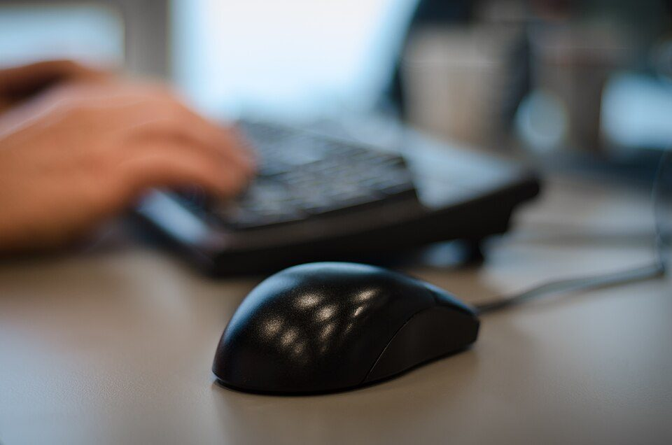
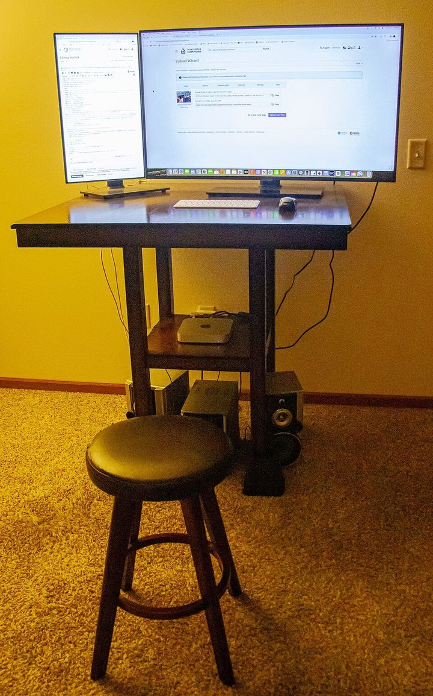

デスクワークの疲れを減らす方法：机・椅子・画面の目安、休憩のとり方、目と体のケア
要点まとめ
一日中パソコンに向かっていると、目や首・肩、腰が疲れてきます。この記事では、疲れを減らす工夫を、厚生労働省の「情報機器作業における労働衛生管理のためのガイドライン」などの公的な指針と、眼科の学会の説明でまとめました。「これで疲れがとれる」と言い切れるものではなく、指針や研究で勧められていることを、数字とともに紹介します。

デスクワークの疲れの正体
見方: 厚生労働省の2008年の調査では、パソコンなどの作業で体の疲れや症状を感じる人は68.6%で、そのうち9割が目の疲れ・痛みを挙げました[6]。精神的な疲れやストレスを感じる人は34.6%でした[6]。この調査は2008年で終わっていて、これより新しい同じ種類の公的な数字は見つかりませんでした[7]。
作業時間が長いほど、症状のある人が増える
1日6時間以上では、84.9%に症状
同じ調査では、1日の作業時間が1時間未満の人で症状があるのは36.2%、6時間以上では84.9%でした[6]。画面を見ているときは、まばたきが1分に5〜7回に減るとする説明もあります（米国眼科学会）[8]。
座りっぱなしも、体への負担になる
平日に1日8時間以上座る人は、男性で38%
厚生労働省の身体活動・運動ガイド2023は、平日に座っている時間が8時間以上の人は男性38%、女性33%だったという国の調査（2013年）を紹介しています[2]。座る時間が1日6〜8時間を超える人は、死亡のリスクが高いという研究のまとめもあります[9]。
机・椅子・画面を整える
| 項目 | 目安 | 位置づけ |
|---|---|---|
| 画面までの距離 | おおむね40cm以上[1] | ガイドライン |
| 画面の高さ | 上端が目の高さとほぼ同じか、やや下[1] | ガイドライン |
| 文字の大きさ | 高さおおむね3mm以上[1] | ガイドライン |
| 書類・キーボードの上の明るさ | 300ルクス以上[1][10] | 事務所衛生基準規則（一般的な事務作業） |
| 室温・湿度（空調がある部屋） | 18〜28℃、40〜70%[10] | 同規則（努力義務） |
| 椅子の座面の高さ | 37〜43cm程度で調整できるもの[1] | ガイドラインの解説 |
| 机の高さ | 65〜70cm程度（調整できる机は60〜72cm）[1] | ガイドラインの解説 |
事務所の照度の基準は2022年12月に、室温の下限は2022年4月に改正されました（下限は17℃から18℃に）[11]。
深く腰かけ、足の裏を床につける
ときどき立って作業するのが望ましい
ガイドラインは、椅子に深く腰かけて背もたれに背をつけ、足の裏全体を床につける姿勢を基本とし、必要なら足台を使うとしています[1]。座るだけでなく、ときどき立って作業するのが望ましいとしています[1]。上腕と前腕の角度は90度以上が好ましく、頭を前に傾けすぎると首のこりや痛みが増えると説明しています[1]。
画面と書類の距離をそろえる
目を移すたびにピントを合わせ直すと、目が疲れる
ガイドラインの解説は、画面と書類・キーボードの距離をそろえるよう勧めています。視線を移すたびにピントを合わせ直していると、目の疲れを招くためです[1]。画面の位置・角度・明るさは、1日に何度でも必要に応じて調整するのが望ましいとしています[1]。
自宅で働くとき
自宅でも、事務所と同じ水準を目安に
明るさ300ルクス以上、室温18〜28℃、湿度40〜70%
厚生労働省のテレワークのガイドラインは、自宅などには事務所の規則や情報機器作業のガイドラインは「一般には適用されない」としたうえで、同じ水準の作業環境になるよう、会社が助言し、チェックリストを使うのが重要だとしています[12]。自宅で働くときの目安として、机の上の明るさ300ルクス以上、室温18〜28℃、湿度40〜70%を示しています[13]。
休憩のとり方と座りすぎ対策
情報機器作業のガイドラインは、休憩のとり方を次のように示しています[1]。
- 作業中
1回の連続作業は1時間を超えないようにする
- 途中で
1〜2分程度の小休止を、1〜2回とる
時間を決めず、自由にとれるようにする[1]
- 1時間ごと
次の連続作業までに、10〜15分の作業休止をとる
遠くを見る、目を閉じる、ストレッチ、ほかの仕事など[1]
「作業休止」は、いわゆる休憩とは別のもの
画面から離れて、目と体を休める時間
ガイドラインの解説は、作業休止をいわゆる休憩時間ではなく、画面から離れて遠くを眺めたり、目を閉じたり、ストレッチをしたり、ほかの仕事をしたりする時間と説明しています[1]。目安を1時間とした理由として、約1時間以上続けると入力のミスが増え、疲れの指標が下がるという研究を挙げています[1]。
座りすぎの「上限」は決まっていない
こまめに中断し、1日60分以上は体を動かす
身体活動・運動ガイド2023は、座りっぱなしの時間が長くなりすぎないよう注意するとしていますが、時間の上限は示していません[2]。根拠の説明の中で、例えば30分ごとに座りっぱなしを中断することが、血糖や中性脂肪などのリスクを下げるのに重要だという報告を紹介しています[2]。大人には、歩くのと同じかそれ以上の強さの活動を1日60分以上（約8,000歩以上）勧めています[2]。

スタンディングデスクで、座る時間は減る
ただし、首・肩・腰の症状が減るという確かな根拠はない
コクランの系統的レビュー（2018年）では、立っても座っても使える机で、職場で座っている時間が短期（3か月まで）に1日平均約100分減りました。ただし根拠の質は低く、長い期間の効果は分かっていません[15]。2019年の別のレビューでは、職場で立つ・歩くを増やす取り組みで、首・肩・腰などの症状が減るとは示されませんでした[16]。
座ったままできるストレッチ
反動をつけず、ゆっくり10〜30秒伸ばす
痛くない範囲で、呼吸を止めずに
厚生労働省の資料「ストレッチングでリラックス」は、座ったままできるストレッチとして、背中を丸めて前に倒す、浅く座って片ひざを伸ばし前に倒す、両手を組んで上に伸ばし胸を張る、背もたれをつかんで腰をひねる、片手を上げてわき腹を伸ばす、などを紹介しています[17]。はずみをつけずに10〜30秒ゆっくり伸ばし、痛いところまで伸ばさず、呼吸を止めないことがポイントです[17]。
目の疲れを減らす
まず、眼鏡の度数が合っているかを確かめる
一番よく見える度数が、パソコンに向くとは限らない
日本眼科学会の手引き（2025年）は、一番よく見える度数（完全矯正）の眼鏡をふだん使っていると、いつもピントを合わせる力が必要になり、目が疲れやすいとしています[3]。パソコン・スマホなど使う距離に合わせて処方することを勧めています[3]。日本眼科医会も、度が合っていない眼鏡やコンタクトは目の疲れの原因になるとしています[20]。
まばたき、エアコンの風、加湿でドライアイを防ぐ
オフィスで働く人の6割以上がドライアイかその疑い
日本眼科医会は、オフィスで働く人の60%以上がドライアイかその疑いがあるとしています[4]。エアコンの風を直接受ける環境はよくないとし、乾燥していれば加湿器などで対応するよう勧めています[4]。意識してまばたきを増やすことも勧めています[20][21]。
| 対策 | 公的機関・学会の説明 |
|---|---|
| 1時間ごとの作業休止 | 厚生労働省のガイドラインが示している[1] |
| ブルーライトカット眼鏡 | 眼科の6団体は、目の疲れを減らす効果はまったくないとする試験を引用し、子どもに勧める根拠はないとしている[5]。大人向けの日本の学会の見解は見つからなかった |
| 20-20-20ルール（20分ごとに20秒、6m先を見る） | 日本眼科医会のハンドブックが、米国で提唱されているものとして紹介[21]。効果を確かめた研究は、29人を対象にした小規模なものしか見つからなかった[22] |
| スタンディングデスク | 座る時間は減るが、根拠の質は低い[15]。症状が減るとは示されていない[16] |
心の疲れと働き方
強いストレスを感じる人は67.5%
仕事の量と、失敗・責任がそれぞれ39.5%
厚生労働省の2025年の調査では、仕事や職業生活で強い不安・悩み・ストレスがある労働者は67.5%でした。内容は、仕事の量と、仕事の失敗・責任の発生などがそれぞれ39.5%で最も多くなっています[23]。
今回確認できなかった点
- パソコン作業の自覚症状についての、2008年より新しい公的な調査
- 大人向けのブルーライトカット眼鏡についての、日本の眼科の学会の見解
- 画面の明るさの具体的な数値の目安
- 1時間ごとの作業休止が疲れを減らすことを直接確かめた研究の原文
- ストレスチェック義務化の施行日を定めた政令の官報の原文（労働局の資料で確認した）
出典（25件）
閲覧日はいずれも2026年11月10日
- 情報機器作業における労働衛生管理のためのガイドライン（令和元年7月12日、令和3年12月1日一部改正、PDF）（厚生労働省）
- 健康づくりのための身体活動・運動ガイド2023（PDF）（厚生労働省）
- 成人の視力検査および眼鏡処方に関する手引き（2025年2月、PDF）（日本眼科学会）
- ドライアイに悩む方へ―生活の注意と治療の目安―（日本眼科医会）
- 小児のブルーライトカット眼鏡装用に対する慎重意見（2021年4月14日、PDF）（日本眼科学会・日本眼科医会ほか）
- 平成20年 技術革新と労働に関する実態調査結果の概況（PDF）（厚生労働省）
- 技術革新と労働に関する実態調査【平成20年調査をもって廃止】（厚生労働省）
- Computers, Digital Devices, and Eye Strain（米国眼科学会（AAO））
- 座位行動と死亡率の関係（厚生労働省 e-ヘルスネット）
- 事務所衛生基準規則（e-Gov法令検索）
- パンフレット「職場における労働衛生基準が変わりました」（PDF）（厚生労働省）
- テレワークの適切な導入及び実施の推進のためのガイドライン（PDF）（厚生労働省）
- 自宅等でテレワークを行う際の作業環境の整備について（PDF）（厚生労働省）
- World Health Organization 2020 guidelines on physical activity and sedentary behaviour（Bull FC ほか（British Journal of Sports Medicine））
- Workplace interventions for reducing sitting at work（2018年）（Cochrane（PubMed））
- Workplace interventions for increasing standing or walking for decreasing musculoskeletal symptoms in sedentary workers（2019年）（Cochrane（PubMed））
- ストレッチングでリラックス（PDF）（厚生労働省）
- 職場における腰痛予防対策指針及び解説（PDF）（厚生労働省）
- 快適に進めるVDT作業（PDF）（労働者健康安全機構 京都産業保健総合支援センター）
- 目についての健康情報「パソコンと目」（日本眼科医会）
- はたらく人の目を守る 眼科検診ハンドブック（2025年7月、PDF）（日本眼科医会）
- The effects of breaks on digital eye strain, dry eye and binocular vision: Testing the 20-20-20 rule（Talens-Estarelles C ほか（Contact Lens and Anterior Eye、2023年））
- 令和7年 労働安全衛生調査（実態調査）の概況（PDF）（厚生労働省）
- 労働者数50人未満の事業場にもストレスチェックの実施が義務になります（2026年9月30日、PDF）（佐賀労働局）
- パンフレット「脳・心臓疾患の労災認定」（PDF）（厚生労働省）
写真・画像の出典（2件）
- キーボードとマウスでの作業（イメージ）
写真: www.Pixel.la Free Stock Photos／Wikimedia Commons（CC0） - 立って作業できる机（イメージ）
写真: Wikideas1／Wikimedia Commons（CC0）